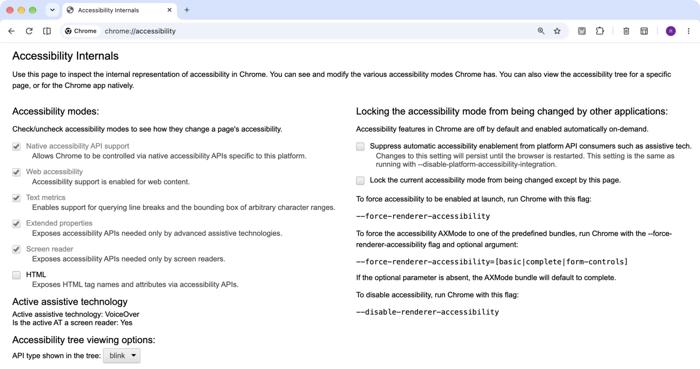
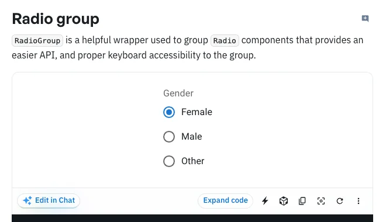

L'arbre d'accessibilitat fràgil
Per què l'HTML semàntic és clau per al rendiment web
Joan León · A11y Conf 2026
Notes
Hola a totes i a tots. Em dic Joan León i aquesta xerrada va d'un arbre que gairebé ningú no veu, però que fan servir cada dia milions de persones: l'arbre d'accessibilitat.
Veurem per què és fràgil, què el trenca i per què tenir-ne cura fa que el web sigui alhora més accessible i més ràpid.
Segueix la xerrada des del teu dispositiu

- N mostra o amaga les notes de cada diapositiva.
- D mostra totes les diapositives en una sola pàgina.
- G canvia entre la vista visual i la de text.
- H amaga la barra de controls per deixar més espai.
- T canvia entre el tema clar i el fosc.
- L canvia d'idioma: español, English, català.
- ? obre l'ajuda i la configuració, on pots desactivar les dreceres d'una tecla.
- Les fletxes, o els botons Anterior i Següent, canvien de diapositiva.
Notes
Abans de començar: aquestes diapositives estan publicades a l'adreça que veieu a la pantalla, nucliweb punt github punt io, barra, el árbol de accesibilidad frágil, que és el títol de la xerrada en castellà, amb guions entre les paraules. La versió en català és a la mateixa adreça seguida de barra ca. També podeu escanejar el codi QR. Cada diapositiva té notes com aquestes, escrites perquè pugueu seguir la xerrada llegint, amb un lector de pantalla o més endavant, quan la reviseu.
Premeu la tecla N per veure les notes o la D per llegir totes les diapositives seguides com un document. La G canvia entre la vista visual, amb gràfics i diagrames, i la vista de text, amb les taules i les llistes; la T canvia entre el tema clar i el fosc, i la L canvia d'idioma: les diapositives i les notes també estan en castellà i en anglès. Si les dreceres d'una tecla us molesten amb el vostre lector de pantalla, es poden desactivar des de l'ajuda i la configuració, amb la tecla de l'interrogant.
I gràcies a la intèrpret de llengua de signes per acompanyar-nos avui.
Notes
Soc Web Performance Artisan: em dedico al rendiment web, i m'agrada fer-ho amb la cura d'un artesà. Vaig fundar PerfReviews, on ajudem empreses perquè els seus webs carreguin i responguin més de pressa. Soc Google Developer Expert en tecnologies web, organitzo el GDG Girona i soc soci de GeeksCAT. Em trobareu a joanleon.dev, LinkedIn, X i Bluesky.
L'any passat vaig fer aquí una lightning talk sobre aquest tema i em vaig quedar amb ganes d'explicar-ne molt més: aquesta és la versió llarga, amb dades noves.
Un web lent és un web menys accessible
El rendiment web és accessibilitat: decideix qui pot fer servir el teu web i qui no.
Notes
Començo amb una idea que de vegades se'ns oblida: el rendiment web no és només una qüestió de negoci o de SEO. Un web que triga deu segons a respondre en un mòbil barat amb una connexió dolenta no és lent per a aquella persona: és inservible. Optimitzar el rendiment és facilitar l'accés a qui té pitjor connexió o un dispositiu de gamma baixa.
Qui té el dispositiu més lent?
- Les persones amb discapacitat tenen més barreres per entrar i mantenir-se al mercat laboral, i amb això menys accés a tecnologia recent.
- Moltes persones que fan servir tecnologia d'assistència eviten actualitzar: un canvi pot trencar l'única manera que tenen de fer servir l'ordinador.
- Un Android barat amb TalkBack és la porta d'entrada a internet per a molta gent.
Font: Eric Bailey, Accessible is Performant, performance.now() 2024.
Notes
I aquí hi ha la connexió que més m'importa. Qui té el dispositiu més lent? Com explica l'Eric Bailey, les persones amb discapacitat tenen més barreres per accedir a la feina, i per tant a tecnologia recent. A més, moltes persones que fan servir tecnologia d'assistència no actualitzen el sistema ni el navegador per por, justificada, que es trenqui l'únic que els funciona.
És a dir: les persones que més depenen que el web funcioni bé són, sovint, les que el fan servir en pitjors condicions.
Així es veu un web que bloqueja el fil principal

Notes
Aquest és un enregistrament del panell Performance de Chrome carregant el web de Renfe. A dalt hi ha la xarxa, amb moltes peticions en paral·lel. A sota, el fil principal del navegador: durant més de sis segons està ocupat gairebé sense descans, amb blocs grocs de JavaScript i morats d'estils i layout.
Mentre el fil principal està ocupat, el navegador no pot respondre a ningú: ni a qui fa clic, ni a qui prem una tecla, ni a la tecnologia d'assistència que li pregunta què hi ha a la pantalla. L'element més gran de la pàgina no apareix fins gairebé als sis segons.
En directe obro una altra traça de la mateixa pàgina, enregistrada com la veuria un mòbil Android de gamma mitjana: un Pixel 7 emulat, amb una xarxa 4G lenta i la CPU quatre vegades més lenta. Aquí el contingut principal triga 10,7 segons a aparèixer, sobretot per la xarxa, i el fil principal treballa uns 2,5 segons repartits al llarg de la càrrega. La traça és al repositori, a bench/traces/demos, per obrir-la al panell Performance de DevTools.
Els mil·lisegons també sonen
Temps des que es prem una tecla fins que el lector de pantalla comença a parlar, en un ordinador lent:
230–250 ms → 190–200 ms
Marco Zehe, optimització de l'arbre d'accessibilitat de Firefox 67 (2019), citat per Eric Bailey.
Notes
Per a qui fa servir un lector de pantalla, el rendiment se sent. El 2019, el Marco Zehe, que treballava en l'accessibilitat de Firefox, va aconseguir reduir el temps des que es prem una tecla fins que el lector comença a parlar: en un ordinador lent, d'uns 240 mil·lisegons a uns 195.
Com ho va aconseguir? Creant menys objectes accessibles per als div que no aporten res. Menys nodes, menys feina, menys espera. Quedeu-vos amb aquesta idea, perquè és la tesi de la xerrada.
Com pinta un navegador
- HTML → DOM
- CSS → CSSOM
- Càlcul d'estils
- Arbre d'accessibilitat
- Layout
- Pintat
- Composició
L'arbre d'accessibilitat es construeix a partir del DOM després de calcular els estils: display: none o el content d'un pseudoelement el canvien.
Notes
Repassem molt ràpidament què fa el navegador. Descarrega l'HTML i construeix el DOM. Descarrega el CSS i construeix el CSSOM. Calcula quins estils s'apliquen a cada element, calcula on va cada cosa, que és el layout, pinta i compon la imatge final.
I en paral·lel, quan hi ha una tecnologia d'assistència escoltant, construeix l'arbre d'accessibilitat. Fixeu-vos en l'ordre: es construeix després de calcular els estils, perquè el CSS també el canvia. Un element amb display none desapareix de l'arbre, i el text d'un pseudoelement before o after hi apareix. Així que no, el CSS no és només presentació.
DOM + ARIA → arbre d'accessibilitat
HTML
<fieldset>
<legend>To de trucada</legend>
<input type="radio" id="calisto"
name="to" checked>
<label for="calisto">Calisto</label>
</fieldset>Arbre d'accessibilitat
group "To de trucada"
radio "Calisto" checked: trueCada node té nom, rol, estat i, si cal, descripció. Amb HTML semàntic, el navegador els omple per tu.
Notes
A l'esquerra, un grup de radio buttons en HTML: un fieldset amb el seu legend, un input de tipus radio i el seu label. A la dreta, el que el navegador lliura a la tecnologia d'assistència: un grup anomenat "To de trucada" i, a dins, un radio anomenat "Calisto" que està marcat.
Cada objecte de l'arbre té un nom, un rol, un estat i opcionalment una descripció. Amb HTML semàntic tot això surt de franc, sense escriure ni una sola línia d'ARIA ni de JavaScript.
No és un arbre: és un bosc
- Cada sistema operatiu té la seva API: NSAccessibility a macOS, UI Automation i IAccessible2 a Windows, AT-SPI a Linux.
- L'arbre viu fora de la pàgina: el navegador l'envia a un altre procés, i la tecnologia d'assistència el consulta a través del sistema.
- Si la pàgina canvia més ràpid del que l'arbre s'actualitza, el que sent la persona ja no coincideix amb el que hi ha a la pantalla.
Notes
Parlem de l'arbre d'accessibilitat com si n'hi hagués un de sol, però en realitat és un bosc. Cada sistema operatiu té la seva pròpia API d'accessibilitat, i el navegador tradueix la pàgina a cadascuna.
A més, aquest arbre viu fora de la pàgina: cal enviar-lo a un altre procés. Com més gran i canviant és el DOM, més dades viatgen i més triga a actualitzar-se. I si la pàgina canvia més de pressa del que l'arbre es sincronitza, la persona que no veu la pantalla pot activar un control que ja no hi és, o que està en un altre estat. Per això diem que és fràgil.
Quan l'arbre arriba tard
-
Pas 1 de 4: tot sincronitzat
Pantalla
Afegeix al carro
DOM
<button> Afegeix al carro </button>Arbre d'accessibilitat
button "Afegeix al carro"Lector de pantalla
«Afegeix al carro, botó»
La pantalla, el DOM i l'arbre d'accessibilitat diuen el mateix.
-
Pas 2 de 4: clic, i React torna a renderitzar
Pantalla
Afegit
DOM
<button disabled> Afegit </button>Arbre d'accessibilitat
Desactualitzatbutton "Afegeix al carro"Lector de pantalla
Encara no ha preguntat.
El DOM ja ha canviat, però l'arbre d'accessibilitat s'actualitza en el cicle de renderització, i el fil principal continua ocupat amb el JavaScript de la nova renderització i amb els scripts de tracking: analítica, màrqueting i tècnics.
-
Pas 3 de 4: el lector de pantalla pregunta
Pantalla
Afegit
DOM
<button disabled> Afegit </button>Arbre d'accessibilitat
Desactualitzatbutton "Afegeix al carro"Lector de pantalla
«Afegeix al carro, botó»
La persona sent un botó que ja no és a la pantalla, i el pot tornar a activar.
-
Pas 4 de 4: el fil principal queda lliure
Pantalla
Afegit
DOM
<button disabled> Afegit </button>Arbre d'accessibilitat
Actualitzatbutton "Afegit" disabledLector de pantalla
«Afegit, botó, atenuat»
La informació arriba, però tard: com més feina té el fil principal, més dura el desfasament.
Consell: divideix les tasques llargues i cedeix el fil principal (yield to main) perquè el navegador pugui actualitzar la pantalla i l'arbre entremig. web.dev: Optimize long tasks
Notes
Vegem aquesta última idea pas a pas, amb un botó «Afegeix al carro» fet amb React. En el primer pas tot està sincronitzat: la pantalla, el DOM, l'arbre d'accessibilitat i el que diu el lector de pantalla coincideixen.
En el segon pas, la persona activa el botó. React torna a renderitzar el component i el DOM ja diu «Afegit», amb el botó desactivat. Però l'arbre d'accessibilitat no s'actualitza en aquell instant: Chrome l'actualitza en el seu cicle de renderització, després dels estils, i l'envia al procés amb què parla el lector de pantalla. Mentre el fil principal continuï ocupat amb el JavaScript de la nova renderització, i amb els scripts de tracking que carreguen gairebé tots els webs reals, d'analítica, de màrqueting i tècnics, l'arbre que veu el lector és el d'abans.
En el tercer pas, el lector de pantalla pregunta què hi ha, i li responen amb l'arbre antic: «Afegeix al carro, botó». La persona sent un botó que ja no és a la pantalla, i el pot tornar a prémer.
En el quart pas, el fil principal queda lliure, l'arbre s'actualitza i el lector diu «Afegit, botó, atenuat». La informació arriba, però tard. És una simplificació: el desfasament sol durar mil·lisegons, però com més feina hi ha al fil principal, i com més nodes canvien a cada renderització, més dura. I si React substitueix el node en lloc d'actualitzar-lo, a més es perd el focus.
Un consell: dividir les tasques llargues i cedir el fil principal, el que es coneix com a yield to main, dona al navegador marge per actualitzar la pantalla i l'arbre d'accessibilitat entre una tasca i la següent. A la diapositiva hi enllaço l'article de web.dev sobre com optimitzar les tasques llargues.
El dia que VoiceOver va deixar de parlar
Una auditoria d'una aplicació de formació mèdica, feta amb Material Design. VoiceOver es penjava sempre a la mateixa pantalla: una llista enorme de radio buttons.
Prioritzar la Developer Experience sense tenir en compte l'HTML que genera pot acabar en una molt mala User Experience.
Adaptada d'Eric Bailey, Accessible is Performant, performance.now() 2024.
Notes
Aquesta xerrada neix d'una història que va explicar l'Eric Bailey el 2024. Estava auditant una aplicació de formació mèdica construïda amb Material Design i, en una pantalla, VoiceOver deixava de parlar. Va reiniciar Safari, va buidar la memòria cau, va reiniciar l'ordinador: sempre igual. El culpable era un munt de radio buttons de Material injectats a la pàgina. Quan els van canviar per radios natius, VoiceOver va deixar de penjar-se.
La frase original és: prioritizing developer ergonomics without considering the generated HTML it produces can lead to bad things happening
. A la diapositiva l'he adaptada per posar cara a cara l'experiència de desenvolupament, Developer Experience, i l'experiència de les persones usuàries, User Experience. Jo volia saber si això encara passa avui, el 2026, amb els components que fem servir ara.
Un radio button natiu
<div class="radio">
<input type="radio" name="ringtone" id="moon-0" value="moon-0" checked>
<label for="moon-0">Calisto</label>
</div>131 caràcters. 0 bytes de JavaScript.
Notes
He muntat un banc de proves amb sis implementacions del mateix grup de radio buttons: un títol, "Ajustes", que vol dir configuració, un grup, "Tono de llamada", és a dir, to de trucada, i N opcions. Tot el codi és al repositori de la xerrada. Cada implementació s'ha muntat seguint la seva documentació oficial.
Aquesta és la referència: el radio natiu. Un div, un input i un label. Cent trenta-un caràcters i ni un byte de JavaScript.
shadcn/ui amb Radix
<div role="group" data-slot="field" data-orientation="horizontal" class="…">
<button type="button" role="radio" aria-checked="true"
data-state="checked" value="moon-0" data-slot="radio-group-item"
id="moon-0" tabindex="-1" data-radix-collection-item class="…">
<span data-state="checked" data-slot="radio-group-indicator" class="…">
<span class="…"></span>
</span>
</button>
<label data-slot="field-label" for="moon-0" class="…">Calisto</label>
</div>2.475 caràcters (les classes estan retallades amb «…»). 275 KB de JavaScript.
Notes
Ara shadcn/ui amb Radix, probablement el més utilitzat avui en projectes React. Aquí no hi ha cap input: hi ha un botó al qual es posa el rol radio amb ARIA, un estat aria-checked que manté JavaScript, i dos spans per dibuixar el cercle. He retallat les classes de Tailwind amb punts suspensius; sense retallar, una sola opció ocupa gairebé dos mil cinc-cents caràcters.
Una dada curiosa: la versió actual de shadcn ja no fa servir Radix per defecte, sinó Base UI, que en lloc d'un botó genera un span amb rol radio i un input ocult. També és al banc de proves.
MUI
<label class="MuiFormControlLabel-root …">
<span class="MuiButtonBase-root MuiRadio-root … Mui-checked …">
<input class="PrivateSwitchBase-input …" type="radio"
value="moon-0" checked name="ringtone">
<span class="…">
<svg … aria-hidden="true" viewBox="0 0 24 24"><path d="…"></path></svg>
<svg … aria-hidden="true" viewBox="0 0 24 24"><path d="…"></path></svg>
</span>
</span>
<span class="MuiTypography-root … MuiFormControlLabel-label …">Calisto</span>
</label>1.119 caràcters. 329 KB de JavaScript.
Notes
MUI sí que fa servir un input natiu, i això és bo per a l'accessibilitat. Però l'embolcalla amb spans, l'amaga visualment i dibuixa el cercle amb dos SVG. I cada vegada que fas clic, afegeix elements per a l'efecte ripple. Són 329 kilobytes de JavaScript per a la pàgina d'exemple.
Material Web
<md-radio id="moon-0" name="ringtone" value="moon-0" checked tabindex="0">
#shadow-root
<div aria-hidden="true" class="container checked">
<md-ripple aria-hidden="true">#shadow-root <div class="surface"></div></md-ripple>
<md-focus-ring aria-hidden="true"></md-focus-ring>
<svg class="icon" viewBox="0 0 20 20">… una màscara i tres cercles …</svg>
<div class="touch-target"></div>
</div>
</md-radio>
<label for="moon-0">Calisto</label>821 caràcters, amb el seu shadow DOM. 41 KB de JavaScript.
Notes
I Material Web, els web components de Google, successors de la biblioteca que va auditar l'Eric. Un element md-radio amb el seu propi shadow DOM, que conté dos web components més amb el seu shadow DOM, un SVG i diversos divs. El rol de radio el posa amb JavaScript a través d'ElementInternals. És el més lleuger en JavaScript, 41 kilobytes, però ja veureu que el pes no ho és tot.
El que costa una opció
| Implementació | Elements | Atributs | Profunditat | Selectors CSS | JavaScript |
|---|---|---|---|---|---|
| Natiu | 5 | 7 | 3 | 5 | 0 KB |
| shadcn (Base UI) | 9 | 36 | 6 | 304 | 275 KB |
| shadcn (Radix) | 8 | 33 | 6 | 304 | 275 KB |
| MUI | 12 | 25 | 7 | 35 | 329 KB |
| Material Web | 16 | 36 | 7 | 45 | 41 KB |
Elements, atributs i profunditat del bloc mesurat, inclòs el shadow DOM. JavaScript descomprimit de tota la pàgina.
Notes
Amb una sola opció, les diferències semblen petites: el natiu fa servir cinc elements i set atributs; la resta, entre vuit i setze elements i entre vint-i-cinc i trenta-sis atributs. La diferència gran és en el JavaScript: zero davant d'entre 41 i 329 kilobytes.
Però ningú no fa un formulari d'una opció. Vegem què passa quan n'hi ha moltes.
Amb 100 opcions
| Implementació | Elements | Temps de bloqueig (TBT) | Resposta al clic |
|---|---|---|---|
| Natiu | 302 | 0 ms | < 16 ms |
| shadcn (Base UI) | 405 | 160 ms | 120 ms |
| shadcn (Radix) | 305 | 150 ms | 112 ms |
| MUI | 903 | 139 ms | 208 ms |
| Material Web | 1.402 | 283 ms | 104 ms |
La resposta al clic es mesura amb Event Timing, que no registra esdeveniments de menys de 16 ms. Per sobre de 200 ms, l'INP deixa de considerar-se bo.
Notes
Amb cent opcions, i la CPU alentida quatre vegades per simular un mòbil normal, el radio natiu no bloqueja el fil principal ni un mil·lisegon, i el clic respon en menys de setze mil·lisegons, que és el mínim que es pot mesurar.
Els components de framework bloquegen entre 139 i 283 mil·lisegons en carregar. I el clic de MUI triga 208 mil·lisegons: ja supera el llindar de 200 que Google considera bo per a l'INP, només pels radio buttons de la pàgina.
Un clic, amb un lector de pantalla escoltant
| Implementació | Mil·lisegons |
|---|---|
| Natiu | 2,6 |
| Natiu amb estils | 3,2 |
| shadcn (Base UI) | 185 |
| shadcn (Radix) | 446 |
| Material Web | 453 |
| MUI | 1.189 |
Chrome amb --force-renderer-accessibility, que és el que passa quan hi ha un lector de pantalla en marxa. Amb 100 opcions: 1 ms en el natiu davant de 36 ms en MUI.
Notes
Aquesta és, per a mi, la dada més important de la xerrada. Chrome només construeix l'arbre d'accessibilitat quan detecta una tecnologia d'assistència. Es pot forçar amb una opció d'arrencada, i llavors les traces de rendiment mostren la feina d'accessibilitat amb nom propi.
Mesurem un sol clic en una pàgina amb mil radio buttons. En el natiu, el navegador dedica 2,6 mil·lisegons a actualitzar l'arbre d'accessibilitat. En shadcn, entre 185 i 446. En Material Web, 453. I en MUI, gairebé 1,2 segons. Més d'un segon de feina d'accessibilitat per prémer un radio button, que se suma a tota la resta. Amb cent opcions, la diferència és d'un mil·lisegon davant de trenta-sis.
Per què? Amb un radio natiu, en fer clic canvia l'estat de dos inputs. Amb un component de React, el clic torna a renderitzar el grup, canvien atributs en molts elements, i cada canvi al DOM és un canvi que l'arbre d'accessibilitat ha de processar.
Material Web amb 1000 opcions: 108 segons
// @material/web 2.5.0 · radio/internal/single-selection-controller.js
updateTabIndices() {
const siblings = this.controls; // querySelectorAll de tots els radios del grup
…
for (const sibling of siblings) {
if (sibling !== focusable) sibling.tabIndex = -1;
}
}| Opcions | 100 | 300 | 1000 |
|---|---|---|---|
| Temps | 0,1 s | 0,8 s | 24 s |
Notes
Material Web té un problema afegit. Cada radio, en connectar-se a la pàgina, busca tots els radios del seu grup i els reescriu el tabindex. Amb N radios, això són N al quadrat escriptures al DOM. Amb cent opcions gairebé no es nota; amb tres-centes triga gairebé un segon; amb mil, vint-i-quatre segons al meu portàtil, i cent vuit segons amb la CPU d'un mòbil normal.
I tot això per reimplementar en JavaScript una cosa que el navegador ja fa tot sol amb un grup de radios natiu: un únic punt de tabulació i la navegació amb fletxes.
El que el navegador et dona de franc
- Un sol punt de tabulació per grup i navegació amb les fletxes.
- Nom, rol i estat correctes a l'arbre d'accessibilitat.
- Enviament del formulari, validació amb
requiredi emplenament automàtic. - Mode d'alt contrast del sistema (
forced-colors). - Funciona abans que carregui el JavaScript, i si no carrega mai.
I amb accent-color o appearance: none, l'estil de la teva marca.
Notes
Tot això ve inclòs en un input de tipus radio: el focus, les fletxes, el nom i l'estat a l'arbre d'accessibilitat, l'enviament del formulari, la validació, el mode d'alt contrast de Windows, i que funcioni encara que el JavaScript falli.
I el disseny? Amb la propietat accent-color s'hi aplica el color de la marca en una línia. I si cal un disseny totalment propi, appearance none permet dibuixar-lo amb CSS sense perdre res de tot això. Al banc de proves, el natiu amb estils personalitzats costa pràcticament el mateix que el natiu sense tocar.
Un matís honest: la mida del DOM també compta
| Accessibilitat | Temps de bloqueig en carregar |
|---|---|
| Desactivada | 16 ms |
| Activada | 479 ms |
L'HTML semàntic redueix el cost, però no l'elimina: menys DOM és menys feina per a l'arbre d'accessibilitat.
Notes
Vull ser honest amb les dades. Amb mil opcions, fins i tot el radio natiu paga: sense accessibilitat, la càrrega bloqueja 16 mil·lisegons; amb un lector de pantalla escoltant, 479. Construir l'arbre d'accessibilitat d'una pàgina gran costa, es faci com es faci.
La conclusió no és "el natiu és gratis", sinó que cada node del DOM té un cost extra per a qui fa servir tecnologia d'assistència. Menys DOM i un DOM més simple és menys feina, i aquí l'HTML semàntic guanya de molt.
L'interruptor que no veus
Demo en directe: chrome://accessibility

| Mode | Què hi afegeix Chrome |
|---|---|
| Native accessibility API support | Respon a les API d'accessibilitat del sistema operatiu |
| Web accessibility | L'arbre de la pàgina: rol, nom, valor, estat i posició de cada node |
| Text metrics | Salts de línia i límits de paraules del text |
| Extended properties | Estils de text, cel·les de taula, regions vives, intervals i relacions |
| Screen reader | El que només necessita un lector de pantalla detectat |
| HTML | Tots els atributs HTML de cada node |
S'encenen sota demanda: un lector de pantalla demana l'arbre complet; un dictat, el bàsic; un gestor de contrasenyes, els formularis.
Notes
Això ho ensenyo en directe, a Chrome. Si escriviu chrome://accessibility a la barra d'adreces, Chrome us ensenya una cosa que normalment no es veu: quines parts de l'arbre d'accessibilitat està construint i per què. Per defecte tot està apagat. Chrome ho encén sota demanda, quan una aplicació del sistema li pregunta per la pàgina.
I no s'encén tot o res. Hi ha modes. Un connecta Chrome amb les API d'accessibilitat del sistema. Un altre construeix l'arbre de la pàgina, amb el rol, el nom, el valor, l'estat i la posició de cada node. D'altres hi afegeixen els salts de línia del text, les propietats esteses, com les regions vives o les cel·les de les taules, el que només necessita un lector de pantalla, o tots els atributs HTML.
Segons el codi de Chromium, un lector de pantalla activa el mode complet; una eina de dictat, el bàsic; i un gestor de contrasenyes, un mode que només construeix els formularis. És a dir, el cost de l'arbre d'accessibilitat no el paguen només les persones que fan servir un lector de pantalla.
Ho vaig descobrir per accident preparant aquesta xerrada. Després de les proves amb VoiceOver, macOS es va quedar marcant VoiceOver com a actiu tot i que estava apagat. Aquesta pàgina deia «tecnologia d'assistència activa: VoiceOver», i Chrome construïa l'arbre complet a totes les pàgines que obria. Me'n vaig adonar perquè el banc de proves, amb l'accessibilitat desactivada, va començar a mesurar feina d'accessibilitat: entre 30 i 50 mil·lisegons més a cada càrrega del web de viatges, amb la CPU alentida com la d'un mòbil modest. Aquest és l'impost que paga, a cada pàgina, qui fa servir tecnologia d'assistència. Com més lleugera sigui la pàgina, més petit és l'impost.
Les descripcions dels modes surten del codi de Chromium, del fitxer ui/accessibility/ax_mode.h, i de la mateixa pàgina a Chrome 158.
Per a les mesures, Chrome té dues opcions d'arrencada: force-renderer-accessibility, que encén l'arbre com ho faria un lector de pantalla, i disable-platform-accessibility-integration, que ignora el que digui el sistema operatiu.
Deu anys fent la mateixa pregunta
- 2016: Marcy Sutton:
you can't optimize what you can't measure
. Proposa una mètrica «Accessibility Tree Ready». - 2020: Scott Jehl demana a Lighthouse mètriques que incloguin la tecnologia d'assistència (issue #11049). Continua obert.
- 2024: Eric Bailey ho torna a demanar a performance.now().
- 2026: aquí som.
Notes
Això no és una idea nova, i em sembla important dir-ho. El 2016, la Marcy Sutton ja feia xerrades sobre accessibilitat i rendiment. Deia que no es pot optimitzar el que no es pot mesurar, i que no hi havia manera de mesurar l'arbre d'accessibilitat. Va proposar una mètrica, un "Accessibility Tree Ready".
El 2020, l'Scott Jehl va obrir un issue a Lighthouse per demanar mètriques que tinguessin en compte la tecnologia d'assistència. Continua obert. El 2024, l'Eric Bailey ho va tornar a demanar. Deu anys amb la mateixa pregunta. I tot això abans de la IA: abans pensàvem.
La hipòtesi
Optimitzar el contingut per al rendiment també fa més ràpids els lectors de pantalla.
Com l'he posada a prova
- Al navegador: traces de Chrome amb l'accessibilitat activada (
--force-renderer-accessibility). - Al lector de pantalla: VoiceOver automatitzat, mesurant quant triga a anunciar cada opció.
Notes
Així que el 2026 la pregunta es pot respondre, almenys en part. La meva hipòtesi és que optimitzar el contingut per al rendiment també fa més ràpids els lectors de pantalla.
L'he posada a prova en dos nivells. Al navegador, amb les traces de Chrome amb l'accessibilitat activada, que ja heu vist. I al mateix lector de pantalla, automatitzant VoiceOver per mesurar quant triga a anunciar cada opció.
Al navegador: confirmada
- La feina d'accessibilitat creix amb la quantitat i la complexitat del DOM.
- Després d'un clic, amb 1000 opcions: 2,6 ms amb el radio natiu davant de 185–1.189 ms amb components de framework.
- Aquesta feina passa al fil principal: competeix amb la resposta a la interacció i amb el tracking.
Notes
Pel que fa al navegador, la hipòtesi es confirma: la feina d'accessibilitat creix amb la mida i la complexitat del DOM, i amb els components de framework és entre setanta i quatre-centes cinquanta vegades més gran després d'un mateix clic. I passa al fil principal, el mateix que ha de respondre a la persona i el mateix en què s'executen els scripts de tracking i de tercers. Les meves proves no els inclouen, però en un producte real gairebé sempre hi són, així que la competència pel fil principal sol ser més gran.
A VoiceOver: també se sent
| Implementació | 10 opcions | 100 opcions | 1000 opcions |
|---|---|---|---|
| Natiu | 33 | 64 | 436 |
| Natiu amb estils | 32 | 67 | 437 |
| shadcn (Base UI) | 47 | 106 | 1.063 |
| shadcn (Radix) | 47 | 99 | 859 |
| MUI | 57 | 171 | 1.973 |
| Material Web | 45 | 79 | 1.068 |
Amb 1000 opcions, MUI triga gairebé 2 s per opció: 4,5 vegades el natiu.
Notes
I ara, el que de debò sent una persona. Vaig automatitzar VoiceOver a macOS: obro cada pàgina, poso el focus al primer radio, premo la fletxa avall vint vegades i mesuro quant triga VoiceOver a dir l'opció següent. Tres repeticions de cada combinació.
Amb deu opcions, tot està entre 32 i 57 mil·lisegons. Amb cent, el natiu continua en uns 65 mil·lisegons, shadcn en uns 100 i MUI en 171. Amb mil opcions, el natiu triga 436 mil·lisegons, que ja és molt, i els components de framework entre 860 mil·lisegons i gairebé dos segons per opció. Imagineu-vos recórrer així una llista de països: dos segons de silenci a cada pulsació.
Així que la hipòtesi també es confirma on importa: en el que sent la persona. I es confirma el matís: la mida del DOM castiga tothom, però molt més els components que reconstrueixen el control.
Un web de veritat: A11yConf Travel
| Versió | Construïda amb | JavaScript | Elements | Selectors CSS |
|---|---|---|---|---|
| Nativa | HTML: select, dates, range, checkbox, radio, dialog | 10,6 KB | 758 | 68 |
| Legacy | React, MUI, react-select, react-datepicker, react-modal | 785 KB | 2.041 | 626 |
La tasca: 14 passos amb teclat. Filtrar per estrelles, preu i règim, obrir un hotel, recórrer-ne les habitacions i tancar.
Notes
Mil radio buttons demostren el mecanisme, però no són el web que fem servir cada dia. Així que vaig construir un web de viatges fictici, A11yConf Travel, amb una cerca d'hotels: un formulari de cerca, filtres per estrelles, preu, règim i serveis, una llista de trenta hotels, un selector d'ordre i un modal amb el detall de cada hotel.
El vaig fer dues vegades, amb exactament el mateix contingut i els mateixos noms accessibles. Una amb HTML natiu i uns 10 kilobytes de JavaScript per filtrar. L'altra com es fan molts webs que porten anys a l'esquena: React, Material UI amb les seves icones, react-select per a la destinació, react-datepicker per a les dates i react-modal per al detall. La versió legacy carrega 785 kilobytes de JavaScript, gairebé el triple d'elements i nou vegades més selectors CSS.
I en les dues versions vaig mesurar la mateixa tasca amb el teclat, catorze passos: moure's pels filtres d'estrelles, marcar quatre estrelles, abaixar el preu, canviar el règim, obrir el primer hotel, recórrer-ne les habitacions i tancar amb Escape.
Al navegador: l'arbre costa el mateix; el que l'envolta, no
| Mesura | Nativa | Legacy |
|---|---|---|
| Fil principal | 255 ms | 991 ms |
| JavaScript | 79 ms | 464 ms |
| Feina d'accessibilitat | 56 ms | 57 ms |
| Interacció més lenta | 24 ms | 72 ms |
| LCP en carregar | 176 ms | 484 ms |
Les traces, per obrir-les a DevTools, són al repositori: bench/traces/travel/.
Notes
Aquí ve un matís important. Amb una pàgina realista, la feina de l'arbre d'accessibilitat és pràcticament la mateixa en les dues versions: 56 mil·lisegons davant de 57 en tota la tasca. Els nodes que arriben al lector de pantalla són gairebé els mateixos, uns 1.480 a cada versió; els més de 500 nodes de més de la legacy són nodes ignorats, que no arriben mai al lector de pantalla.
El que canvia és tot el que passa al voltant de cada pulsació. La versió legacy ocupa el fil principal gairebé quatre vegades més temps, executa gairebé sis vegades més JavaScript, i la seva interacció més lenta triga 72 mil·lisegons davant de 24. I la pàgina triga gairebé el triple a pintar el contingut principal.
Les traces de cada versió estan publicades al repositori. Cada pas de la tasca apareix amb el seu nom a la pista Timings del panell Performance, i el resum en text del repositori té les mateixes xifres pas a pas.
En directe obro les dues traces a trace.cafe, una execució de cada versió amb l'accessibilitat activada. Hi ha tres coses en què cal fixar-se. Primera, el pas 2, marcar «4 estrellas»: a la legacy, un sol gestor de clic de React ocupa 49 mil·lisegons dins d'una tasca de 54, i la interacció triga 75 mil·lisegons; a la nativa, 21. Segona, el pas 11, obrir el detall de l'hotel: 101 mil·lisegons de fil principal a la legacy davant de 21 a la nativa, gairebé tot JavaScript un altre cop. Tercera, una cosa que no apareix a l'INP: cada Tab de la legacy costa entre 30 i 44 mil·lisegons de fil principal repartits en un centenar de tasques, pels gestors de focus i l'efecte ripple, davant d'uns 5 mil·lisegons i una vintena de tasques a la nativa. Cap d'aquestes tasques no és llarga, així que cap mètrica no la marca, però es repeteix a cada pulsació. La feina d'accessibilitat, en canvi, és semblant en totes dues, i al pas 2 fins i tot una mica més gran a la nativa, perquè actualitza la llista de debò al DOM.
A VoiceOver: més lenta en els 14 passos
| Pas | Nativa | Legacy |
|---|---|---|
| Tab entre els filtres d'estrelles | 18–21 ms | 36–40 ms |
| Marcar 4 estrelles fins a sentir «6 hoteles encontrados» | 162 ms | 200 ms |
| Canviar el règim amb les fletxes | 50–52 ms | 81–92 ms |
| Obrir el detall de l'hotel | 70 ms | 93 ms |
| Tancar amb Escape i tornar al botó | 59 ms | 88 ms |
| La tasca completa | 648 ms | 959 ms |
No són els 2 segons dels 1000 radios: són desenes de mil·lisegons a cada pulsació.
Notes
I el que sent la persona. Amb VoiceOver automatitzat, la versió legacy és més lenta en els catorze passos de la tasca, sense excepció. Moure's amb Tab entre els filtres triga el doble: uns 20 mil·lisegons davant d'uns 40. Canviar el règim amb les fletxes, entre 50 i 92. Obrir el detall de l'hotel, 70 davant de 93. Tancar el modal i tornar al botó, 59 davant de 88.
El pas de marcar un filtre és el més semblant, 162 davant de 200, perquè la major part d'aquest temps és la mateixa espera de VoiceOver abans de llegir la regió que anuncia els resultats.
En total, la tasca suma 648 mil·lisegons d'espera a la nativa i 959 a la legacy: una vegada i mitja més. No és el silenci de dos segons dels mil radios. Són desenes de mil·lisegons a cada pulsació, que se sumen al llarg d'una tasca, d'una pàgina i d'un dia sencer navegant amb un lector de pantalla.
El que només es veu a la traça
Amb el focus del teclat en un control, MUI anima un «ripple» en bucle infinit, també amb prefers-reduced-motion: reduce.
| Mesura | Nativa | Legacy |
|---|---|---|
| Frames generats | 30 | 299 |
| Feina de la GPU | 10 ms | 74 ms |
| Tasques del compositor | 2 | 1.719 |
Traça per a DevTools: bench/traces/focus-idle/. A la legacy, la pista Frames és una banda contínua.
Notes
En obrir la traça de la versió legacy a DevTools va aparèixer una cosa que no esperava: frames i animacions entre pulsació i pulsació, quan la persona no fa res.
És l'efecte de focus de Material UI. Quan un botó, un checkbox o un radio rep el focus amb el teclat, MUI dibuixa un cercle que batega en bucle infinit, amb cicles de dos segons i mig, mentre el focus hi sigui. I continua bategant encara que el sistema operatiu demani reduir el moviment.
Per veure-ho aïllat, vaig enregistrar les dues versions amb el focus de teclat al checkbox de quatre estrelles, cinc segons sense tocar res, amb l'accessibilitat activada i la preferència de reduir el moviment. La versió nativa genera 30 frames en aquests cinc segons. La legacy, 299: uns seixanta per segon, sense parar. La GPU treballa 74 mil·lisegons davant de 10, i el compositor fa més de 1.700 tasques davant de 2. El fil principal gairebé no se n'assabenta, perquè l'animació corre al compositor, però el dispositiu no descansa.
És a dir, justament les persones que naveguen amb el teclat o amb un lector de pantalla, i que a més han demanat menys moviment, són les que paguen aquesta feina contínua. Es pot desactivar a la configuració de MUI, però ve activat per defecte.
La mateixa traça, a DevTools
Legacy

Nativa

bench/traces/focus-idle/.Notes
A les dues captures del panell Performance de DevTools es veu la diferència. A dalt, la versió legacy: a partir d'1,6 segons aproximadament, la pista Frames s'omple de frames, l'un darrere l'altre, fins al final. A baix, la versió nativa: la pista Frames és buida durant els cinc segons.
Les dues traces són al repositori, a la carpeta bench/traces/focus-idle, i s'obren arrossegant-les al panell Performance de Chrome DevTools.
En directe les obro a trace.cafe. A la legacy, la pista Frames no s'atura: 309 frames en cinc segons sense tocar res. A la nativa, 34.
En un web real: la documentació de MUI

- 20 botons «Edit in Chat» amb un efecte de brillantor en bucle infinit, també amb
prefers-reduced-motion: reduce. - 5 segons sense tocar res, CPU ×4: uns 580 frames, 1,3 s de fil principal i 14.840 operacions de pintat.
Traça per a DevTools: bench/traces/demos/.
Notes
Això passa fora de la meva maqueta? Vaig buscar un web real fet amb React i MUI, i el més evident és la mateixa documentació de MUI. A la pàgina dels radio buttons, cada exemple té un botó «Edit in Chat» amb una brillantor que recorre el botó cada dos segons, sense parar. N'hi ha vint a la pàgina.
Vaig enregistrar la pàgina cinc segons sense tocar res, amb la CPU quatre vegades més lenta i amb la preferència de reduir el moviment activada. Chrome va generar uns 580 frames, el fil principal va treballar 1,3 segons i va pintar gairebé quinze mil vegades. La brillantor anima la posició del fons, que no es pot delegar al compositor, així que cada frame es torna a pintar al fil principal. I no respecta la petició de reduir el moviment.
En aquesta mateixa documentació, el ripple del focus de teclat no apareix quan es demana reduir el moviment, tot i que al meu web de viatges, amb la mateixa versió de MUI, sí que apareix: la documentació en té cura per al ripple i no per a la brillantor. En directe obro la traça al panell Performance; també és al repositori, a bench/traces/demos.
Un iPhone 16 Pro i 1000 radio buttons
| Implementació | Clic, sense VoiceOver | Clic, amb VoiceOver | Càrrega, sense VoiceOver | Càrrega, amb VoiceOver |
|---|---|---|---|---|
| HTML natiu | 0 ms | 0 ms | 43 ms | 83 ms |
| shadcn/ui (Radix) | 68–74 ms | 63–68 ms | 214 ms | 228 ms |
| MUI | 4,8–5,0 s | 5,1 s | 556 ms | 552 ms |
Amb MUI, cada clic congela Safari 5 segons, amb VoiceOver o sense. Amb HTML natiu, 0.
Notes
Aquest és el primer resultat d'un dispositiu real, enviat amb la versió del benchmark per al navegador: un iPhone 16 Pro, amb Safari, una vegada amb VoiceOver encès i una altra amb VoiceOver apagat. Els números són el temps que Safari queda bloquejat després de cada acció, la mediana de tres repeticions.
Amb HTML natiu, triar un de mil radio buttons no bloqueja gens Safari: zero mil·lisegons, amb VoiceOver i sense. Amb shadcn, uns setanta mil·lisegons. I amb MUI, entre quatre coma vuit i cinc coma un segons. Cinc segons de mòbil congelat a cada clic, en un iPhone de gamma alta. Al meu portàtil, amb Chrome, aquest mateix clic eren menys de dos-cents mil·lisegons.
La meva primera hipòtesi era que aquests cinc segons serien l'arbre d'accessibilitat, i em vaig equivocar: sense VoiceOver triga gairebé el mateix. És un problema de rendiment de MUI a Safari per a iPhone que paga tothom, faci servir o no un lector de pantalla. El que sí que hi afegeix VoiceOver es veu a la càrrega: amb HTML natiu, la pàgina triga 83 mil·lisegons en lloc de 43.
Per això és important mesurar en dispositius reals. Ni el meu portàtil ni l'emulació d'un iPhone al portàtil mostraven res de semblant.
El que aquestes dades no diuen
- Només Chrome i només VoiceOver a macOS: ni NVDA, ni JAWS, ni TalkBack, ni línies braille.
- Un portàtil ràpid amb la CPU alentida no és un mòbil de gamma baixa.
- Servidor local, sense limitar la xarxa.
- 1000 opcions és un cas extrem; 100 ja és realista en formularis llargs.
- A11yConf Travel és una maqueta: sense xarxa real, sense anuncis ni scripts de tercers.
- En algunes proves amb el radio natiu, la primera pulsació no va moure la selecció i VoiceOver es va quedar una opció enrere; aquests passos s'exclouen.
Tot el codi i les dades són al repositori per a qui vulgui repetir-ho.
Notes
I el que aquestes dades no diuen. Només he provat Chrome i VoiceOver. Un portàtil amb la CPU alentida és una aproximació, no un mòbil real. I mil opcions és un cas extrem, tot i que cent ja apareix en formularis de veritat, com un selector de països. El web de viatges s'acosta més a la realitat, però continua sent una maqueta: no té xarxa real, ni anuncis, ni scripts de tercers, que en un web de veritat solen pesar encara més. Tot el codi està publicat perquè qualsevol persona ho pugui repetir amb altres navegadors i lectors de pantalla, i m'encantaria que ho féssiu.
El mateix patró, dècada rere dècada
- 2016, Angular Material:
<md-checkbox role="checkbox" tabindex="0"> - 2024, Material Components Web: el radio que va penjar VoiceOver.
- 2026, shadcn/ui:
<button role="radio"> - Ara: ho escriu una IA.
Notes
Fixeu-vos en el patró. El 2016, l'exemple de la Marcy Sutton era un checkbox d'Angular Material, un element propi amb el rol i el tabindex posats a mà. El 2024, el radio de Material que va penjar VoiceOver. El 2026, el radio de shadcn: un botó amb rol de radio.
Canvien els frameworks, però el patró és el mateix: reconstruir amb divs, ARIA i JavaScript el que el navegador ja ofereix. I avui, cada vegada més, aquest codi no l'escrivim nosaltres: l'escriu un agent d'IA. Així que he volgut comprovar què tria.
L'experiment
Crea una pàgina de configuració amb un selector de to de trucada. Les opcions són: Calisto, Ganímedes, Luna i Europa.
- Claude Code (Claude Opus 5.5) i Antigravity (model per defecte).
- Perfils nets: sense skills, memòria ni configuració personal.
- Dos escenaris: una carpeta buida i un projecte React existent amb shadcn/ui.
- 3 repeticions per combinació.
Notes
L'experiment és senzill. Aquest és el prompt, traduït: crea una pàgina de configuració amb un selector de to de trucada, amb aquestes quatre opcions. No esmento cap tecnologia. Als agents els el vaig donar en castellà, i literalment deia: Crea una página de ajustes con un selector de tono de llamada. Las opciones son: Calisto, Ganímedes, Luna y Europa.
L'he llançat amb Claude Code i amb Antigravity de Google, amb perfils nets, sense les meves skills ni la meva configuració, per veure què obtindria qualsevol persona. En dos escenaris: una carpeta buida i un projecte React que ja existeix i fa servir shadcn, que és com treballem gairebé sempre. Tres repeticions de cadascun, perquè els agents no són deterministes.
En una carpeta buida: HTML semàntic
| Agent | Què va generar | Radio natiu |
|---|---|---|
| Claude Code | Un únic index.html | 3 de 3 |
| Antigravity | HTML, CSS i JavaScript sense framework | 3 de 3 |
Amb <fieldset>, <legend>, <label>, enllaç per saltar al contingut i regió aria-live.
Notes
I aquí em vaig endur la primera sorpresa. Jo esperava que la IA generés React i shadcn per defecte. Doncs no: en una carpeta buida, els dos agents, les sis vegades, van generar HTML semàntic. Radios natius, fieldset i legend, labels, un enllaç per saltar al contingut i fins i tot una regió aria-live per anunciar que s'ha desat. Sense framework.
Quan ningú no els condiciona, els agents trien la plataforma.
En un projecte React amb shadcn: el patró del projecte
| Agent | RadioGroup de Radix | Radio natiu |
|---|---|---|
| Claude Code | 3 de 3 | 0 de 3 |
| Antigravity | 3 de 3 | 0 de 3 |
El component no estava instal·lat: els agents el van escriure a mà, imitant el de shadcn.
Notes
Segon escenari: el mateix prompt, però dins d'un projecte React amb shadcn que ja té botons, targetes i camps de text, però no té el component de radio. Les sis vegades, els dos agents van escriure a mà un RadioGroup de Radix, imitant el de shadcn: botons amb rol de radio i JavaScript. Ni una sola vegada van fer servir el radio natiu que havien triat a la carpeta buida.
La IA amplifica el que ja tens
El mateix agent, amb el mateix prompt, escriu HTML semàntic en una carpeta buida i reprodueix el patró del teu projecte quan n'hi ha.
Notes
Aquesta és la conclusió de l'experiment. La IA no tria malament per si mateixa: amplifica el que ja tens. Si el teu projecte és ple de components que reconstrueixen controls natius, l'agent seguirà aquest camí, encara que sàpiga fer-ho millor. I com que gairebé mai no comencem des d'una carpeta buida, aquest és el cas real.
Modern Web Guidance
- Skills i una CLI que donen als agents coneixement actual de la plataforma web.
- Publicat per Google Chrome, amb Microsoft Edge, Mozilla Firefox i MDN. Llicència Apache 2.0.
- Per defecte, només recomana el que és Baseline Widely available.
Adapta checkboxes, radio buttons, sliders i barres de progrés a la teva paleta sense substituir-los per components propis.
Guia brand-consistent-forms (resum propi). github.com/GoogleChrome/modern-web-guidance
Notes
Com ho canviem, això? Aquí entra Modern Web Guidance. És un conjunt de skills i una eina de línia d'ordres que dona als agents coneixement actualitzat de la plataforma web. El publica l'equip de Chrome, juntament amb Edge, Firefox i MDN, i per defecte només recomana funcionalitats que ja funcionen a tots els navegadors.
I té una guia que sembla escrita per a aquesta xerrada: adaptar els controls de formulari a la marca sense substituir-los per components propis.
No sempre n'hi ha prou d'instal·lar-lo: l'agent l'ha de consultar
| Condició | Claude Code | Antigravity |
|---|---|---|
| Sense Modern Web Guidance | 0 de 3 | 0 de 3 |
| Instal·lat | 1 de 3 (1) | 3 de 3 (3) |
Instal·lat + AGENTS.md | 3 de 3 (3) | 3 de 3 (3) |
Notes
El vaig instal·lar i vaig repetir l'experiment al projecte React. Antigravity el va consultar sempre i les tres vegades va fer servir el radio natiu. Claude només el va consultar una de cada tres vegades. I fixeu-vos: aquella vegada, i només aquella, va fer servir el radio natiu. Les altres dues ni el va mirar i va tornar a escriure el component de Radix.
Així que no sempre n'hi ha prou d'instal·lar-lo: depèn que l'agent decideixi consultar-lo. Vaig afegir al projecte un fitxer AGENTS.md de dues línies, el que recomana la mateixa documentació, i el resultat va ser tres de tres en els dos agents: sempre el van consultar i sempre van fer servir el radio natiu, dins del mateix projecte React.
Un detall de mètode: en el cas de Claude, he comprovat al registre d'eines si va consultar la guia; en el d'Antigravity, em baso en el que el mateix agent diu a la seva resposta.
Dues línies que canvien el resultat
# AGENTS.md
## Desenvolupament web
- Abans d'implementar o modificar qualsevol interfície, consulta
Modern Web Guidance (skill `modern-web-guidance`) i segueix-ne
les recomanacions.
- L'objectiu de Baseline d'aquest projecte és Baseline Widely available.El que va generar Claude, dins del projecte React amb Tailwind:
<fieldset>
<legend>Tono de llamada</legend>
<input type="radio" className="size-4 accent-primary …" />Notes
Aquest és el fitxer complet. El fitxer de l'experiment estava escrit en castellà; aquí el veieu traduït. No diu "fes servir radios natius": això seria donar-li la resposta. Només diu que consulti Modern Web Guidance abans de tocar la interfície, i quin és l'objectiu de compatibilitat.
I aquest és el resultat, amb la llegenda en castellà, «Tono de llamada», és a dir, to de trucada, perquè el prompt també ho era: un fieldset, un legend i un input de tipus radio amb accent-color i el color primari del tema de shadcn. Dins del mateix projecte React i amb Tailwind. És exactament la variant nativa del meu banc de proves.
I quant costa?
| Condició | Cost |
|---|---|
| Sense Modern Web Guidance | 0,32–0,37 $ |
| Amb Modern Web Guidance | 0,46–0,71 $ |
Uns quants cèntims més una sola vegada, davant de centenars de mil·lisegons a cada clic de cada visita.
Notes
Consultar la guia té un cost: cada generació passa d'uns 35 cèntims a entre 46 i 71. Ho paguem una vegada, quan escrivim el codi. El component pesant el paguen totes les persones que fan servir el web, a cada visita i a cada clic. I qui més el paga és qui fa servir un lector de pantalla en un dispositiu modest.
L'experiència de desenvolupament té un cost
Quan prioritzem l'experiència de desenvolupament per sobre de la de les persones usuàries, algú paga la diferència. I es pot mesurar.
Notes
Tanco amb la idea de la lightning talk de l'any passat, ara amb dades. Triem components perquè són còmodes per a qui desenvolupa. Aquesta comoditat té un cost, i no el paguem nosaltres: el paguen les persones usuàries, i sobretot les que fan servir tecnologia d'assistència. Avui hem vist que aquest cost es pot mesurar.
Què pots fer demà
- Fes servir HTML semàntic primer: és la teva primera optimització d'accessibilitat i de rendiment.
- Prova amb un lector de pantalla: Cmd + F5 activa VoiceOver a macOS.
- Mesura amb l'accessibilitat activada:
--force-renderer-accessibility. - Digues al teu agent que consulti Modern Web Guidance des de l'
AGENTS.md. - Dona suport a l'issue #11049 de Lighthouse.
Notes
Cinc coses que podeu fer demà. Una: HTML semàntic primer. Dues: proveu amb un lector de pantalla; en un Mac, Cmd més F5 activa VoiceOver, i n'hi ha prou de comprovar que no es penja. Tres: quan mesureu el rendiment, mesureu també amb l'accessibilitat activada. Quatre: si treballeu amb agents, digueu-los a l'AGENTS.md que consultin Modern Web Guidance. I cinc: passeu per l'issue de Lighthouse que va obrir l'Scott Jehl el 2020; una mica d'atenció pot ajudar que, per fi, tinguem una mètrica.
Fes la prova al teu mòbil

Mesura quant li costa al teu dispositiu l'arbre d'accessibilitat.
- Uns 2 minuts, sense instal·lar res.
- Si fas servir un lector de pantalla, fes-la dues vegades: amb el lector apagat i encès.
- No s'envia res sense que tu ho decideixis.
Notes
Tot el que us he ensenyat surt d'un sol portàtil. I m'agradaria que sortís dels vostres dispositius. Si obriu l'adreça de la pantalla, o escanegeu el codi QR, arribareu a una versió del benchmark que funciona al navegador, també al mòbil, sense instal·lar res. L'adreça és la mateixa de les diapositives, acabada en barra benchmark: nucliweb punt github punt io, barra, el árbol de accesibilidad frágil amb guions entre les paraules, barra, benchmark.
La prova carrega les mateixes pàgines que heu vist, el grup de mil radio buttons i el web de viatges, hi fa clic i mesura quant de temps es queda bloquejat el vostre navegador després de cada acció. Triga uns dos minuts.
Si feu servir un lector de pantalla, us demano una cosa més: feu-la dues vegades, una amb el lector apagat i una altra amb el lector encès. La pàgina compara les dues, i la diferència és el que l'arbre d'accessibilitat li costa al vostre dispositiu. Al final veureu els vostres resultats en una taula, i sou vosaltres qui decidiu si els compartiu al repositori. Amb VoiceOver al meu portàtil, un clic en mil radio buttons bloqueja el navegador 0 mil·lisegons amb HTML natiu, 86 amb shadcn i 98 amb MUI. Tinc molta curiositat per saber quant és als vostres mòbils. A la diapositiva hi ha un enllaç al primer resultat que vaig rebre, el d'un iPhone 16 Pro amb VoiceOver, perquè vegeu com queda.
Gràcies Gracias Thank you
Codi, dades, traces i referències, al repositori.
Crèdits
- Eric Bailey, Accessible is Performant (2024).
- Marcy Sutton, Accessibility and Performance (2016).
- Scott Jehl, Lighthouse #11049 (2020).
- Marco Zehe, feina de rendiment de l'arbre d'accessibilitat de Firefox.
- Scott O'Hara, a11y_styled_form_controls.
Notes
Gràcies, gracias, thank you: dono les gràcies en català a totes les meves xerrades, per portar el català amb mi. Tot el codi del banc de proves, l'experiment amb agents, les dades i les referències són al repositori; el codi QR de la pantalla us hi porta. Gràcies especialment a l'Eric Bailey, la Marcy Sutton, l'Scott Jehl, el Marco Zehe i l'Scott O'Hara, perquè aquesta xerrada està construïda sobre la seva feina. Preguntes?